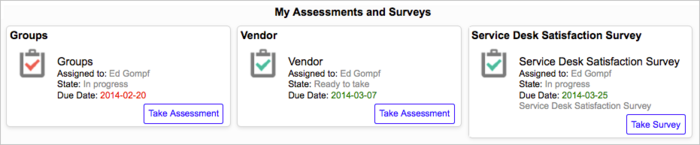
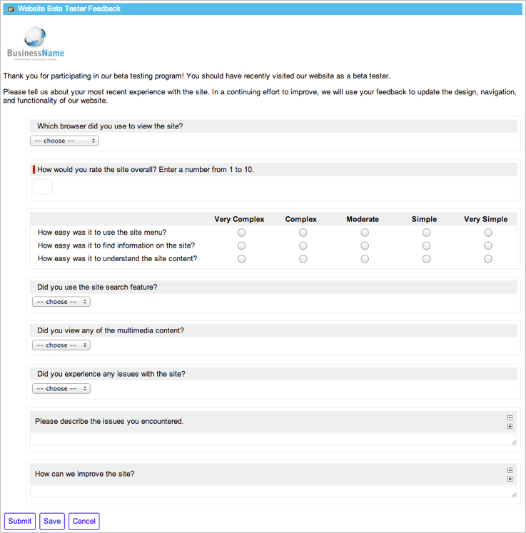
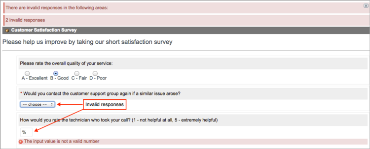
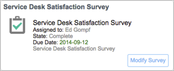

Completing Survey Questionnaires
1 Overview
All available surveys assigned to you appear in your personal assessment and survey queue. No special role is required to complete a survey but you must be logged in and the survey must be assigned to you. When you submit a survey, the system stores your responses.
2 Survey Notifications
If configured to send email, the system sends you a notification when a survey is assigned to you. The message contains a link to the survey and instructions for viewing the assessment and survey queue. Administrators can view and modify the default notification, called Survey User Invite, by navigating to System Policy > Email > Notifications.
3 Taking a Survey
Your assessment and survey queue displays all assessments and surveys assigned to you that are available for completion. Each assessment or survey appears as a card in the queue. The card contains helpful information, including the survey name, state, and due date, and a button to launch the questionnaire. Overdue surveys are clearly marked with a red icon and red due date. You must answer every mandatory question, indicated by a red bar, before you can submit the survey. If you start to take a survey but cannot complete it, save your responses and return to it later. When you have answered all the questions and are satisfied with the responses, submit the survey. By default, you cannot modify your answers to a survey after submission. However, if the administrator has configured this survey to allow retakes, you can edit your answers and resubmit the survey. Completed surveys configured for retake remain in the queue until their due date and display the Modify Survey button on the card. The ability to resubmit surveys is available starting with the Fuji release.
To view your queue and take a survey:
- Navigate to Self-Service > My Assessments & Surveys.
-
- 
-
- Note: Users with the assessment_admin role, including survey administrators, can display other users' assessments and surveys in addition to their own. Use the Show all and Show assigned to me related links at the bottom of the queue to show and hide assessments and surveys. Click a card assigned to another user to open the associated metric type or survey definition.
-
- Click Take Survey on a survey card to open the questionnaire.
-
- 
-
- If there is more than one survey category, you can click the collapse (
 ) or expand (
) or expand ( ) icon to hide or show the questions in the category.
) icon to hide or show the questions in the category.
-
- Answer each question to the best of your ability.
- If you are unsure of how to respond to a question or if a question does not apply to a particular record, select Not Applicable, if available.
- Read any assertions present at the end of the questionnaire and acknowledge with a signature, if required.
- A signature requires you to select a check box or authenticate your full name, which the system displays in a read-only field. You cannot submit your answers to the survey until you provide the required signature.

- Save or submit the survey.
- Save: Saves your responses without submitting them. You can close the questionnaire and access it later from your queue.
- Submit: Submits the completed survey when you are finished.
- If prompted, enter your user name and password to verify your full name signature.
- If all the questions are answered with valid values, a success message appears. If the system detects an unanswered mandatory question or invalid response, the assessment is not submitted, and a message appears at the top of the questionnaire explaining the error. Problematic questions are temporarily highlighted.
- 
- To edit your answers and resubmit a survey that permits retakes, return to your queue and click Modify Survey in the card.
- You can modify your responses to the survey until its due date.
- 

{kind=link}
{kind=link}
{kind=link}
{kind=link}